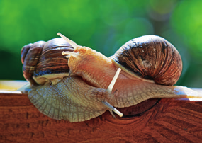
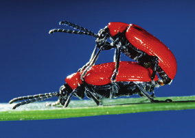
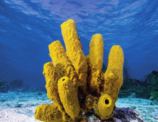
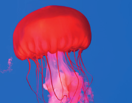
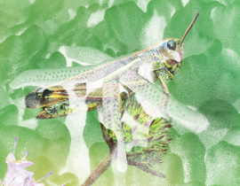
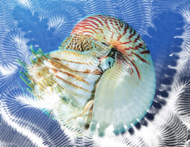

Los procesos de nutrición, reproducción y relación presentan estos rasgos:
La respiración puede ser cutánea, branquial, pulmonar o traqueal. Las formas de alimentación son muy variadas: pueden ser carnívoros, herbívoros u omnívoros.
La reproducción es sexual con sexos separados, aunque hay casos de hermafroditismo. Suelen ser ovíparos (caracol) u ovovivíparos (en algunas moscardas, los huevos se desarrollan dentro del cuerpo de la madre hasta que eclosionan).
Algunos invertebrados carecen de sistema nervioso. Otros solo poseen una simple red de nervios. Un tercer grupo dispone de pequeños cerebros ganglionares conectados con los órganos de los sentidos y los músculos.
Clasificación de los invertebrados
Poríferos
Su cuerpo, perforado por poros, tiene forma de saco.
Cnidarios
Su boca está rodeada de tentáculos con células urticantes.
Moluscos
Su cuerpo, cuando está protegido, presenta una o dos conchas.
Equinodermos
Tienen un esqueleto interno bajo la piel que puede presentar espinas.
Artrópodos
Su cuerpo, dividido en segmentos, está cubierto por un exoesqueleto.

Dos caracoles sobre una superficie de madera

Escarabajos rojos apareándose

Esponja de mar amarilla

Medusa roja

Saltamontes sobre un capullo de flor

Nautilus